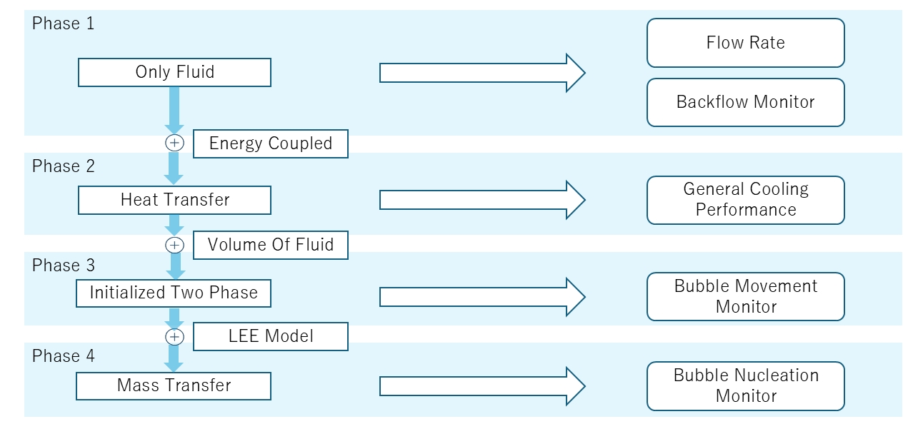

M.Sc. Electrical Engineering
The University of Tokyo, Nomura Lab
2025 — Present · Tokyo, Japan
Research Overview
I am currently a Master's student and CFD engineer in the
Nomura Lab, researching AI-driven shape optimization for a
microchannel-based chip cooling system, targeting thermal
management for advanced semiconductors. As chip performance
and integration density continue to increase, heat
dissipation has become a critical bottleneck — and
efficiently cooling the chip is now a key factor determining
next-generation device performance.
View paper for the original microchannel design
Technical Challenge
The system uses two-phase (gas-liquid) cooling to achieve high cooling performance, but this comes with a key challenge: bubbles forming inside the microchannel can cause localized dryout, where the liquid film breaks down and cooling performance drops sharply in that region. I am responsible for designing and optimizing the microchannel component — the core of the system — to mitigate this effect while maintaining high overall performance.
Approach
- CFD Simulation: Modeling two-phase flow and bubble behavior within candidate microchannel geometries to evaluate cooling performance and dryout risk.
- AI-Driven Optimization: Applying machine learning algorithms to explore microchannel shapes that account for bubble dynamics and suppress dryout, going beyond designs a manual, trial-and-error approach would likely reach.
- Workflow Automation: Built an automated simulation workflow using Python to accelerate design iteration, significantly reducing the manual effort required per design cycle.
- Cross-Team Collaboration: Since this is a multi-component system, I work closely with the designers of other subsystems to ensure my design choices remain compatible with the rest of the system and feasible for fabrication.

CFD simulation workflow